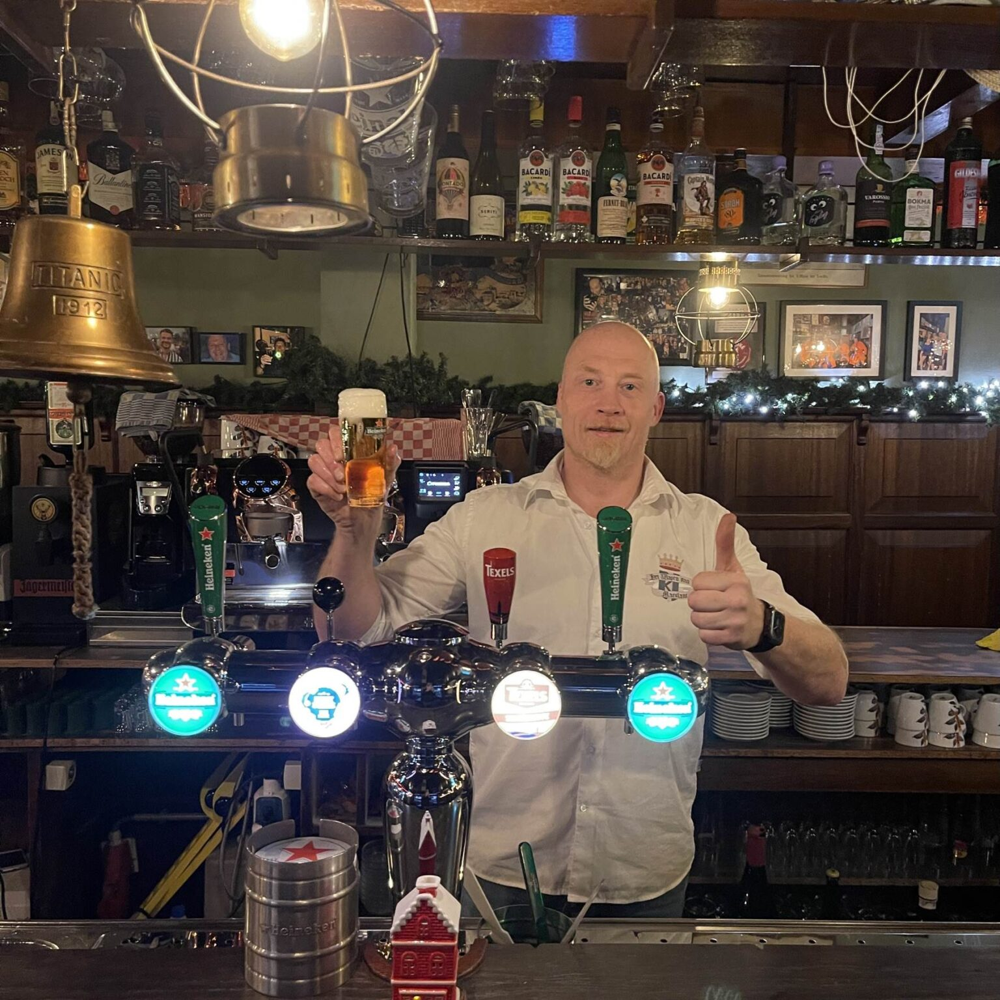
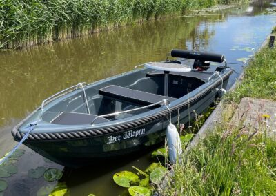
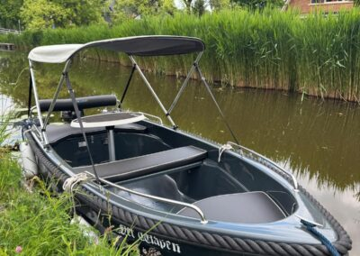
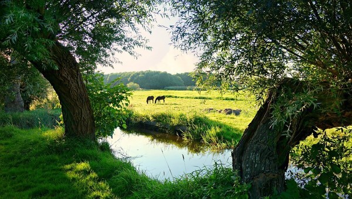

Kom voor een bakje gezelligheid
Bij 't Wapen van Maeslant aan de Kerkweg kom je voor een bakje gezelligheid. Ons sfeervolle café zorgt ervoor dat elk bezoek een feestje is!
-
Zondagochtend
Voor een bakje koffie met appeltaart.
-
Vrijdagmiddag
Voor een lekkere uitsmijter.
-
Zaterdagavond
Voor een paar koude biertjes.

Kom voor de koffie, blijf voor de sfeer
Het maakt niet uit op welk tijdstip: onze barmannen en -vrouwen zorgen ervoor dat je een leuke tijd hebt. Praatje maken? Graag zelfs!
Onze koffiemachine zet de lekkerste kopjes koffie. Gegarandeerd.

Een avond vol gezelligheid
Met een biljarttafel en een dartbord is er altijd wat te beleven bij ons. Zin om een potje te darten met vrienden of een ronde te biljarten? Vraag een van onze barmannen, zij helpen je verder. Natuurlijk altijd onder het genot van een lekker drankje. Zo maken we van elk bezoek een leuk feestje!
't Wapen is ook de thuishaven van het gelijknamige biljartteam, dat uitkomt in de biljartcompetitie B1.
Boot huren in Maasland
Een koe in de wei, een grutto in de lucht. Een boot huren doe je bij 't Wapen van Maeslant.



Vaar door de rust en weidse natuur van Midden-Delfland, tussen Delft, Rotterdam en Den Haag. Huur per uur, per dagdeel van vier uur of voor een hele dag van acht uur.
- Per uurvanaf € 20
- Vier uur varen€ 75
- Hele dag varen€ 125
Borrelarrangement € 85
- Warme ontvangst met koffie
- 4 uur varen met de sloep
- Bij terugkomst een borrel: kies uit een van de vele biertjes van de tap of fles, of een wijntje
- Klassieke bitterballen
Goed om te weten
- De verhuur start om 10:00. Een hele dag: terug om 20:00.
- Een enkel uur reserveren kan tot 19:00.
- Reserveren gaat eenvoudig via de e-mail of telefonisch.
- Je betaalt op de dag zelf aan de bar. Een factuur kan op verzoek.
- Een picknickmand mee is mogelijk als optie.
Kom langs
Kerkweg 41-423155 EE Maasland
Openingstijden
| Maandag | 12:00 - 00:00 |
|---|---|
| Dinsdag | 10:00 - 00:00 |
| Woensdag | 10:00 - 00:00 |
| Donderdag | 10:00 - 00:00 |
| Vrijdag | 10:00 - 01:00 |
| Zaterdag | 10:00 - 01:00 |
| Zondag | 09:30 - 22:00 |